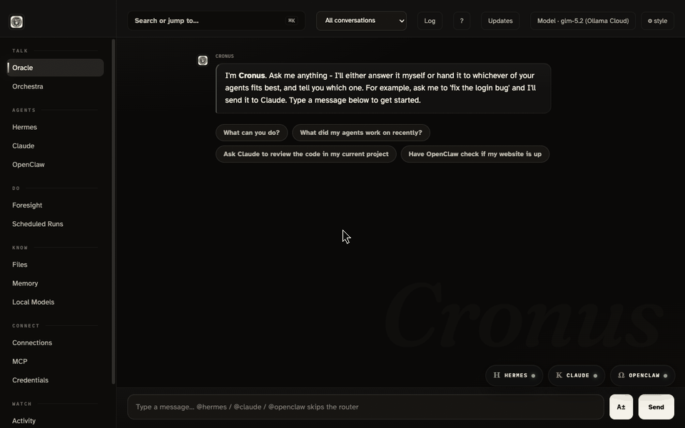
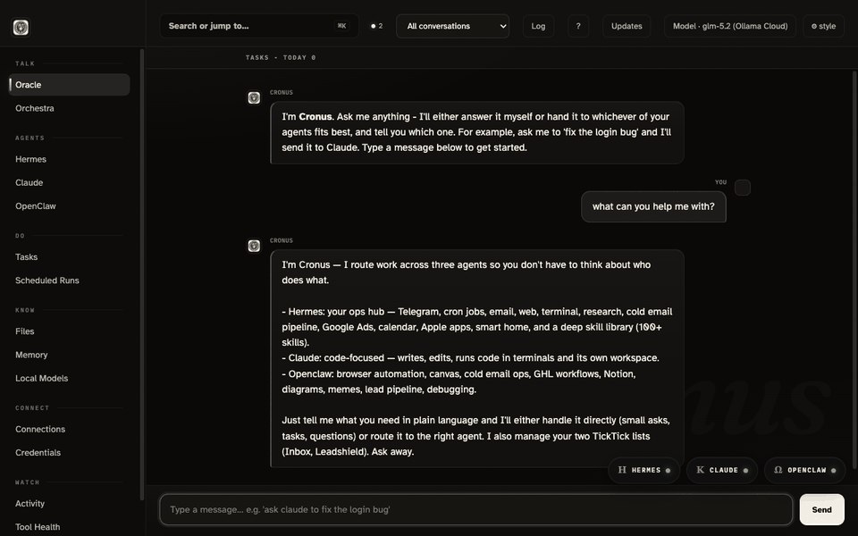

Cronus is a desktop app that puts your AI agents in one place. Ask Cronus anything and it answers or hands the job to the right agent. Or skip the middleman: every agent opens as its own window, right from the dock.

Three steps, no accounts, free to run.
One command (or the desktop app). Cronus runs on your computer and opens as a normal window. Nothing is uploaded anywhere.
Connect at least one AI model. The free path is a local model via Ollama: ollama pull qwen3:4b. Have a Claude plan? Sign in and use that instead.
Type what you want in plain words. Cronus answers, or hands the job to the right agent and shows you the work as it happens.
Real examples, and who ends up doing the work.

Here is the dirty secret of AI: models have no memory. Close the chat and you are a stranger again - every preference re-explained, every lesson re-learned, forever. An assistant that forgets cannot compound, and compounding is the entire difference between a tool and a coworker. Cronus fixes this with real memory that lives on your machine. It looks like this:
Powered by Hindsight, a memory system that runs locally. Agents save the lesson, recall it when it matters, and get better at your work every week. How memory works →
Context is what an AI can see right now - your message, the conversation, whatever else is in the room. It is the model's entire world for that one answer. Too little context and you get generic filler. The wrong context and your private notes ride along into a tool that never needed them. The right context, at the right moment, is where AI stops feeling like a toy.
In Cronus, each agent's conversation is its own room. What you tell Claude is not ambient background for Hermes. Nothing drifts between rooms on its own.
Separation without sharing would be useless - real work flows across agents. So context moves the way people move: through a door, on purpose, where you can see it.
Which agent knows what, and when - that is a decision Cronus gives to you, not to chance. That is what Orchestra mode is for.
A board for conducting context. Place any conversation from any agent on it, side by side, then drag a thread between two of them and hit Weave - Cronus carries the context across, visibly, on purpose.
Memory is what your stack keeps. Context is what it sees right now. Cronus gives you deliberate control of both - that is the whole product in two sentences. How memory works → · Why control matters →
A control room for people who run more than one AI tool and are tired of runs, tabs, and terminals scattered everywhere.
Talk to Cronus. It answers directly, or picks the agent whose powers fit the job and tells you which one it chose.
Hermes, Claude, and OpenClaw each open as their own draggable window from the dock. What you type goes straight to that agent, output streams live.
Works with a free model running on your own computer through Ollama. No account, no API key, no cloud required to start.
Tasks, documents, scheduled runs, lead triage, credentials, tool health, and an Automations builder that turns plain words into n8n workflows - all under one roof, explained in plain language.
The backend runs on your machine and serves localhost only. Your data stays where you can see it.
macOS, Windows, and Linux. One codebase, native installers built for all three on every release.
Two minutes from zero to the dashboard. You need git and Python 3.11 or newer; everything else installs itself on first run.
Open Terminal and run:
git clone https://github.com/agentleadengine/cronus-agent
cd cronus-agent
python3 run.pyFirst run creates its own private environment and installs what it needs, then serves the dashboard at http://localhost:8787/cronus.
Install Ollama, then pull a small local model. Cronus finds it automatically and lists it as "local, free".
ollama pull qwen3:4bThe desktop shell opens Cronus in its own window with a dock icon, and starts the backend for you. Needs Node 22+.
cd desktop
npm install
npm startOr build the installable app: npm run dist:mac produces a DMG under desktop/dist/.
Open PowerShell and run:
git clone https://github.com/agentleadengine/cronus-agent
cd cronus-agent
py run.pyFirst run sets up its own environment, then serves the dashboard at http://localhost:8787/cronus.
A self-contained Cronus Setup.exe (no Python needed at all) is built by the project's CI. Grab the newest one from the Actions page under "Desktop builds", or build it yourself with npm run dist:win in desktop/.
git clone https://github.com/agentleadengine/cronus-agent
cd cronus-agent
python3 run.pyDashboard comes up at http://localhost:8787/cronus.
curl -fsSL https://ollama.com/install.sh | sh
ollama pull qwen3:4bWith Node 22+: cd desktop && npm install && npm start, or build an AppImage with npm run dist:linux.
Short reads, written for people, not developers.
Your first five minutes, step by step.
The heavyweight for the hardest jobs.
The learner: teach it your skills once, it keeps them forever.
Skills built in, plus a market of more to import.
Why your agents remember you next week.
Tokens, models, and jargon in plain English.
The honest case, trade-offs included.